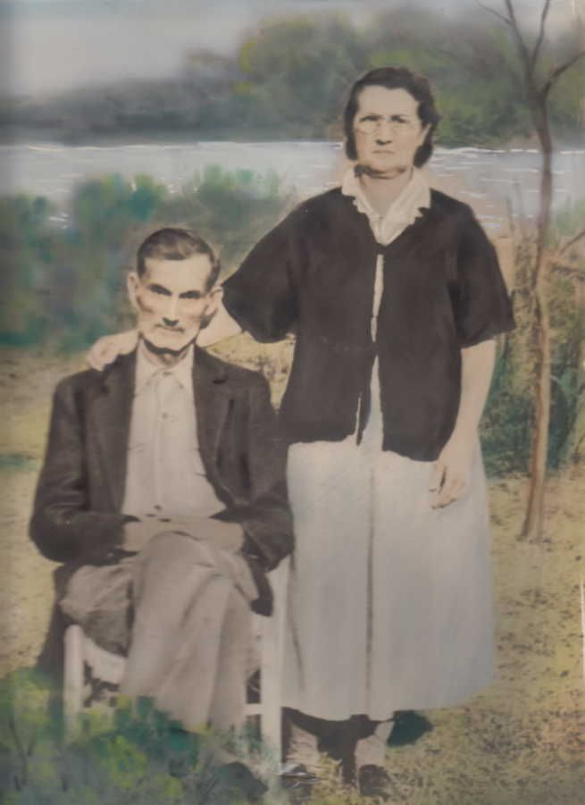

Harry Earl Hoff Jr. (born 22 May 1926; death year disputed: memorial gives 1980, existing project lists 2014; distinct from his father)
Charles Edward Hoff (1937–2016)
Siblings
Berta May Samples (about 1898; birth estimate)
Oscar Vincent Samples (about 1902)
Philip Perry Samples (about 1905)
Vina / Lovina Samples (about 1908–1909)
Ruth E. Samples (about 1910)
Charles G. Samples (born about 1913–1914)
Kitty T. Samples (born about 1916)
Gussie E. Samples (born about 1918–1919)
An additional unnamed/private daughter appears in a derivative tree; identity and dates not public.
Family Relationship Notes
Edith is documented as a daughter in her parents’ 1910 and 1920 census household indexes. Her state birth index names Philander Hamilton Samples and Mary Ida Hayes. Her age differs by about two years in 1910; the 1920 and birth index are consistent with 1903.
18 November 1903 West Virginia birth index gives Edith Elizabeth Samples Hoff, Kanawha County; index names Philander Hamilton Samples and Mary Ida Hayes in its family panel.
1910 Big Sandy census indexes Edith E. Samples, age 5, as daughter in Philander H. Samples household.
1920 Big Sandy/Kanawha census indexes Edith E. Samples, age 17, as daughter in Philander Samples household.
1920 Marriage index pairs Edith E. Samples with Harry E. Hoff in Kanawha County.
1940 Big Sandy household lists Edith, age 36, wife of Harry E. Hoff, with four children.
November 1979 Death month/year from SSDI index; no original death record inspected.
Life Story
Edith’s state birth-index entry gives the full name Edith Elizabeth Samples Hoff and date 18 November 1903. The scanned register image is preserved, but the available page is low contrast; the index is the clearer reading.
Her parentage is supported by two census indexes: in 1910 Edith E. Samples, age 5, is a daughter in Philander H. Samples’s household; in 1920 Edith E. Samples, age 17, is a daughter in Philander Samples’s household. The 1903 birth index and the shared tree also associate Philander and Mary Ida Hayes with her.
The records conflict in small details: 1910 age implies about 1905; 1920 age implies about 1903; 1940 age 36 implies about 1903–04. The state birth index gives 18 November 1903. 1910 calls her mother Ida M.; 1920 indexes Mary T.; other records identify Mary Ida Hayes. Preserve those variants.
The public tree and census indexes list siblings Berta, Oscar, Philip, Vina/Lovina, Ruth, Charles, Kitty, and Gussie. Exact birth dates for most are not resolved here; no sibling profiles were created.
Photo Gallery

The memorial galleries show this same painted couple image for Philander and Mary Ida. No original caption or independent identity evidence was found; retain as a likely couple/family photo lead, not a verified individual portrait.
Census age variation is preserved rather than used to replace the birth index date.
Mother’s name appears as Ida M. Samples in the 1910 index, Mary T. Samples in 1920, and Mary Ida Hayes in the state birth index and other compiled sources. The identity is strongly supported as the same wife/mother, but the census middle-initial variants remain unexplained.
Edith’s November 1979 death is supported by a derivative SSDI index citation on WikiTree. No original death certificate, obituary, or confirmed grave image was obtained.
Do not merge this Samples line with the separate Hoff line beyond the documented 1920 Harry–Edith marriage and their children.